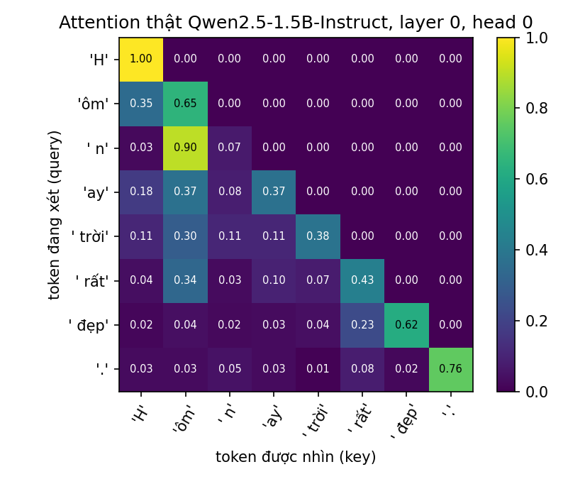
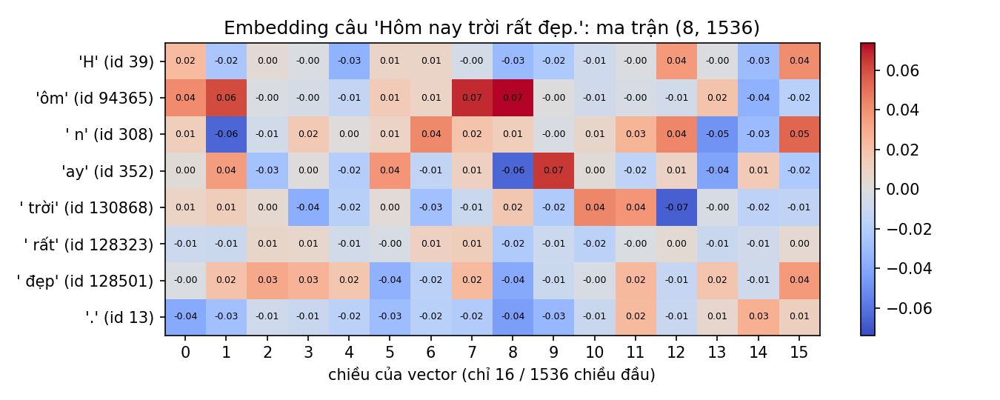

Tìm hiểu mô hình ngôn ngữ lớn Large Language Models (LLMs)
Mục tiêu: giải thích LLM học và sinh văn bản thế nào, phân biệt các giai đoạn huấn luyện, nhận biết khả năng và hạn chế — mỗi mục có demo trên model thật.
Họ và tên
Ngành / chuyên ngành
Nhóm
Phạm Phương Thanh Thư
Data Science & AI
1
Nguyễn Khánh Toàn
Data Science & AI
Ngô Hồng Phúc
Smart logistics
Phạm Thị Muội
Data Science & AI
Nguyễn Thái Bảo
Smart logistics
Nguyễn Bảo Đại
Data Science & AI
MODEL
Qwen2.5-1.5B-Instruct
decoder-only · 1,543,714,304 tham số
DỮ LIỆU
UIT-VSFC · UIT-ViQuAD 2.0
+ WinoGender · Nemotron-Personas-Vietnam
LẦN CHẠY CHÍNH THỨC
20261129_003355_normal
Kaggle T4 x2 · 196 cell · 0 lỗi · 41.3 phút
Nhóm 1
Model · Môi trường · Thư việncell 0.3 – 0.5 · số đọc bằng code
MODEL
Qwen2.5-1.5B-Instruct
Decoder-only Transformer · Hugging Face · Apache-2.0
1,543,714,304
tham số, đếm bằng code
28
decoder block
1,536
hidden
12 / 2
head Q / KV (GQA)
8,960
FFN SwiGLU
151,936
token từ điển
32,768
token ngữ cảnh
Model phụ: Qwen2.5-1.5B base (mục 5)tokenizer GPT-2 (mục 3)
MÔI TRƯỜNG
T4
Kaggle · 14.6 GiB
fp16
2 byte / tham số → 3.1 GB
41.3 phút
cả notebook
196 · 0
cell · lỗi
1Chỉ suy luận, không fine-tune
2Mọi lần sinh truyền tham số tường minh (Instruct mặc định do_sample=True)
3Python 3.13.16 · CUDA 13.0 · seed 42
💻 cell 0.4, 0.5
model = AutoModelForCausalLM.from_pretrained(
MODEL_INSTRUCT, torch_dtype=torch.float16,
device_map={"": 0})
n = sum(p.numel() for p in model.parameters())
assert n == 1_543_714_304
THƯ VIỆN
Thư viện
Bản
Dùng cho
torch
2.11.0
GPU
transformers
5.20.2
generate()
accelerate
1.15.0
đặt lên GPU
pandas / pyarrow
2.3.3 / 23.0.1
dữ liệu
scikit-learn
1.6.1
TF-IDF (8)
statsmodels
0.15.0
McNemar (10)
scipy
—
Pearson r (9)
matplotlib
3.10.0
vẽ hình
sacrebleu / rouge-score
2.6.0 / —
BLEU, ROUGE
deepeval / bitsandbytes
4.3.5 / —
giám khảo (10)
Phiên bản đọc bằng importlib.metadata → results/env.json; sacrebleu, deepeval ở part10_summary.log
Nguồn: outputs/results/env.json, model_config.json · run 20261129_003355_normal
1Giới thiệu (1/2): language model · LLM · chatbot là gì?cell 1.1
Chatbot= LLM + chat template + giao diện + an toàn
<|im_start|>user Thủ đô Nhật Bản?<|im_end|>
<|im_start|>assistant ← model viết tiếp
LLM= LM rất lớn, Transformer
1.54 tỉ
tham số (Qwen2.5-1.5B)
18T
token pretraining
LM= xác suất của chuỗi token
P(x₁…xₙ) = ∏ₜ P(xₜ | x₁…xₜ₋₁)biết các token trước → đoán token tiếp theo
Qwen thật (cell 2.4): "Hôm nay trời rất" → ?
" đẹp"
0.788
" nắng"
0.063
" lạnh"
0.046
LM
LLM
Chatbot
INPUT
token đã có
prompt bất kỳ
tin nhắn + lịch sử
OUTPUT
P(token tiếp theo)
văn bản, từng token
câu trả lời trên giao diện
Học bằng
đoán token tiếp
pretraining, SFT, alignment
dùng LLM đã post-train
Ví dụ
n-gram, gợi ý từ
GPT-4, Llama, Qwen2.5
ChatGPT, Gemini
Cùng câu hỏi "Thủ đô của Pháp là gì?" cell 1.1 · mục 5
Base (LM thuần)
"- VnExpress / Thứ năm…" ✗ viết tiếp như trang báo
Instruct + chat template
"Thủ đô của Pháp là Paris." ✓
Ý chính: mọi LLM, mọi chatbot bên dưới vẫn chỉ đoán token tiếp theo
Nguồn: Bengio et al. 2003 · Qwen2.5 Technical Report 2024 · chat template: Hugging Face docs · demo base vs Instruct: results/base_vs_instruct.csv
1Giới thiệu (2/2): một LLM làm 4 tác vụ — chỉ đổi promptcell 1.1 – 1.7, 10.3b, 10.3d
Hỏi đáp
INPUT
Thủ đô của Nhật Bản là gì? Trả lời một câu.
OUTPUT
"Thủ đô của Nhật Bản là Tokyo."
⚙ dùng kiến thức học từ pretraining
EM 0 · F1 0.25G-Eval Correctness
1.0 ✓
Tóm tắt
INPUT
Đoạn 5 câu về môn Học sâu + "Tóm tắt đoạn trên trong 1 câu."
Cấu trúc decoder-only của Qwen2.5-1.5B 2.1 · từ config
💻 cell 2.1 · đếm tham số theo khối (ra số % trên hình)
for name, p in model.named_parameters(): # duyệt mọi ma trận trọng số
key = ("embedding" if "embed_tokens" in name else "attention" if "self_attn" in name
else "ffn" if "mlp" in name else "norm" if "norm" in name else "khác")
PARAM_GROUPS[key] += p.numel() # cộng số phần tử → 233M / 154M / 1,156M
Causal attention 2.2, 2.3
Khi học
mọi vị trí đoán song song, không nhìn trộm đáp án
Khi sinh
token tương lai chưa tồn tại
Xn × 1,536
→
Q, K, VX·W
→
QKᵀ/√dn × n
→
+ M−∞ tương lai
→
softmax · V
Attention(Q, K, V) = softmax(QKᵀ/√d + M) · VQ: đang tìm gì · K: có gì · V: nội dung lấy · M: 0 / −∞
Tính tay: 3 token, d = 2 (số giả định)
① QKᵀ/√2 Q = K = [[1,0],[0,1],[1,1]] V = [[1,0],[0,2],[3,1]] hàng "trời": [0.71, 0.71, 1.41]
② + M, softmax
Hôm
nay
trời
Hôm
1
0
0
nay
.33
.67
0
trời
.25
.25
.50
③ × V "trời" = .25·[1,0] + .25·[0,2] + .50·[3,1] ≈ [1.76, 1.00]
Model thật (2.3, layer 0, head 0): trên đường chéo = 0.00 · mỗi hàng cộng = 1
💻 cell 2.2
M = torch.tril(torch.ones(n, n)) # 1 = được nhìn, 0 = chặn (→ −∞ trước softmax)
Nguồn: results/model_config.json (cell 2.1), figures/attention_qwen.png (2.3) · sơ đồ vẽ lại theo config Qwen2.5 · Vaswani 2017 · Qwen2.5 report §2 · tính tay kiểm bằng numpy
2Nền tảng kiến trúc (3/3): từ token đầu vào đến xác suất token tiếp theocell 2.2 – 2.4 · chạy trên Qwen thật
① Văn bản"Hôm nay trời rất"
→
② Tokenizer6 token ID
→
③ Embedding6 × 1,536
→
④ 28 decoder blockcausal attention + FFN
→
⑤ Vị trí cuối1 vector 1,536
→
⑥ LM head151,936 logit
→
⑦ Softmaxpᵢ = e^zᵢ / Σⱼ e^zⱼ
→
⑧ Chọn tokengreedy: " đẹp"
Chỉ vector vị trí cuối (đã thấy cả câu) được đổi thành xác suất → chọn 1 token → nối vào input, lặp lại (mục 6)
Causal mask (8 token) 2.2
Tam giác dưới = được nhìn: chỉ nhìn chính nó + token trước
Attention THẬT của Qwen 2.3 · layer 0, head 0

Trên đường chéo = 0.00 · mỗi hàng cộng = 1
OUTPUT: P(token tiếp theo) 2.4
#
Token
ID
Xác suất
1
" đẹp"
128501
0.788
2
" nắng"
136583
0.063
3
" lạnh"
130823
0.046
4
" nóng"
131484
0.029
5
" " (dấu cách)
220
0.007
1Model cho mọi token một xác suất
2Greedy lấy " đẹp"; lấy mẫu ~6% ra " nắng"
3Mục 4: học xác suất này · mục 6: chọn
💻 cell 2.4 · top_k_next_tokens() (rút gọn)
logits = model(ids).logits[0, -1] # vị trí cuối: 151,936 điểm
probs = torch.softmax(logits, -1) # điểm → xác suất, tổng 1
top = torch.topk(probs, k) # k = 5 token cao nhất
Kiểm traΣ P = 1đường chéo = 01,543,714,304 tham số
Nguồn: figures/causal_mask.png, attention_qwen.png · results/top5_next_tokens.csv · run 20261129_003355_normal
3Tokenization (1/2): chia văn bản thành token · token ID · embeddingcell 3.1 – 3.5
4 cách chia "Hôm nay trời rất đẹp."
Cách chia
Từ điển
Từ lạ
Token
Nhận xét
Theo từ
rất lớn
[UNK]
6
từ điển phình to
Ký tự
nhỏ
không lạ
21
chuỗi dài
Byte
256
không lạ
29
"ờ" = 3 byte
Subword BPE
Qwen 151,665 GPT-2 50,257
lùi về byte
Qwen 8 GPT-2 22
cân bằng → LLM dùng
BPE học bảng "gộp" Sennrich et al. 2016
① Bắt đầu256 byte
→
② Đếmcặp hay gặp nhất
→
③ Gộpthành token mới
→
④ Lặpđủ từ điển
t r E1 BB 9D i → tr ờ i → trời → ␣trời
minh họa thứ tự gộp, không phải bảng merge thật
Kho nhiều tiếng Việt (Qwen)
"␣trời" = 1 token
Ít tiếng Việt (GPT-2)
"␣trời" = 5 token
Từ văn bản đến vector: 5 bước với " trời"
① UTF-87 byte
→
② Tách"␣trời"
→
③ BPE1 token
→
④ ID130868
→
⑤ Embedding1,536 số
eₜ = E[ID(t), :]E: 151,936 × 1,536, học trong pretraining · ID chỉ là số thứ tự, vector mới mang nghĩa

8 token × 16 / 1,536 chiều đầu (3.4) · decode lại đúng câu gốc 4/4 (3.5)
logits = model(ids).logits[0].float() # (n, 151,936), 1 lần chạy
log_probs = F.log_softmax(logits[:-1], dim=-1) # bỏ vị trí cuối (không có nhãn)
targets = ids[0, 1:] # nhãn = câu dịch trái 1 token
lp = log_probs.gather(1, targets[:, None])[:, 0] # log P(token đúng); loss = −lp
𝓛 = − (1/N) Σₜ ln P(xₜ₊₁ | x₁…xₜ) · PPL = e^𝓛P = 0.9 → loss 0.1 · P = 0.01 → loss 4.6 → học = làm loss nhỏ lại
Loss từng token trên model thật 4.2
"Hôm n" → "ay": loss 0.004 (dễ) · "H" → "ôm": loss 8.19 (ngữ cảnh quá mở)
Câu đúng
Câu xáo trộn
Câu Anh
Cross-entropy ↓
2.985
6.701
3.129
Perplexity ↓
19.8
813.6
22.9
Top-1 acc ↑
0.43 (3/7)
0.12 (1/8)
0.33 (2/6)
Top-5 acc ↑
0.71 (5/7)
0.25 (2/8)
0.67 (4/6)
Đoán bừa
loss ln 151,936 = 11.93 · PPL 151,936
Đảm bảo= outputs.loss (chênh ≤ 5e-07, 3/3 câu)so với câu xáo trộn, đoán bừachỉ tính loss, không huấn luyện
Nguồn: results/per_token_loss.csv, loss_summary.csv, next_token_accuracy.csv · figures/context_target_pairs.png, per_token_loss.png · PPL ≈ số lựa chọn model đang phân vân
Đảm bảocùng kiến trúc, 1,543,714,304 tham sốcùng prompt, greedy, repetition_penaltyIFEval: chỉ dẫn kiểm bằng máygiám khảo gpt-6.2-sol
Nguồn: results/base_vs_instruct.csv, ifeval_summary.csv, geval_summary.csv · Zhou et al. 2023 (IFEval) · nhóm không tự fine-tune: 2 bản do Qwen công bố
6Quá trình sinh văn bản (1/2): autoregressive · greedy · temperature · top-pcell 6.1, 6.2 · Holtzman et al. 2020
Autoregressive: sinh từng token, token vừa sinh thành input 6.1
① Inputprompt + đã sinh
→
② Logitvị trí cuối
→
③ ÷ T, softmax
→
④ top-pcắt đuôi
→
⑤ Chọnargmax / bốc thăm
→
⑥ Nối↺ tới EOS
INPUT "Viết một câu giới thiệu ngắn về thành phố Hà Nội." → 8 bước greedy
6Quá trình sinh văn bản (2/2): cùng một prompt, 5 cấu hình sinhcell 6.3 – 6.5, 10.3d
INPUT "Viết một câu giới thiệu ngắn về thành phố Hà Nội." · mỗi cấu hình 3 lần (seed 42, 43, 44) · max_new_tokens 60
Cấu hình
OUTPUT thật (lần 1, rút gọn)
Khác / 3
distinct-2
Lặp
Coherence
Nhận xét
greedy
"Hà Nội là thành phố lớn nhất và trung tâm chính trị… nổi tiếng với di tích như Đền Hùng, Lăng Chủ tịch Hồ Chí Minh…"
1
0.33
0.00
0.45
ổn định · sai: Đền Hùng ở Phú Thọ
T = 0.5
"…nổi tiếng với di sản lịch sử, văn hóa lâu đời như Hoàng thành Thăng Long…"
3
0.65
0.06
0.49
gần greedy
top-p 0.5
"Hà Nội là một thành phố lớn và sầm uất, nằm ở trung tâm Việt Nam…"
3
0.76
0.05
0.49
tự nhiên
top-p 0.95
"…công viên绿地…" · lần 2: "…văn minh ở Trung Quốc…"
3
0.84
0.02
0.45
bịa, lẫn chữ Hán
T = 1.5
"Hà Nội là đứa con của nước mườngs bậc nhất thángيران trung/sdk a m.media trẻ…"
3
0.99
0.00
0.05
vô nghĩa
Greedy
ổn định nhưng không đảm bảo đúng → dùng cho mọi phần đánh giá (7–10)
Càng phẳng
càng đa dạng (distinct-2 0.33 → 0.99), càng dễ sai
T = 1.5
duy nhất kém hẳn G-Eval: 0.05 / 0.06 · 4 cấu hình kia: Coherence 0.45–0.49, Instr. 0.34–0.50
Tiêu chíKhác / 3: lặp lại đượcdistinct-2: cặp từ khác nhau / tổng (Li et al. 2016)Lặp: % cặp từ lặp trong 1 outputCoherence: G-Eval 0–1sự thật: đọc tay
Đảm bảochỉ đổi tham số chọn tokenseed = 42 + lầnassert greedy 3 lần giống nhau
Nguồn: results/decoding_samples.csv, decoding_diversity.csv, geval_summary.csv · Li et al. 2016 (distinct-n) · Liu et al. 2023 (G-Eval)
7Khả năng của LLM: in-context learning · zero-shot vs few-shotcell 7.1 – 7.5, 10.1, 10.2
In-context learning
Học từ ví dụ trong prompt, không đổi tham số · nhờ pretraining
Làm theo chỉ dẫn
"Chỉ trả lời: tích cực hoặc tiêu cực" → đúng 1 chữ · nhờ SFT + alignment
Xử lý tác vụ ngôn ngữ
Mọi tác vụ → sinh chữ: phân loại = sinh ra "tích cực"
Zero-shot 0 ví dụ
Phân loại cảm xúc của câu phản hồi
sinh viên sau. Chỉ trả lời:
tích cực hoặc tiêu cực.
Câu: "thầy giảng nhanh ."
Cảm xúc:
OUTPUT✗ tích cực (nhãn: tiêu cực)
Few-shot +4 ví dụ từ train
Phân loại cảm xúc … (giống trên)
Câu: "dạy tốt có tâm ."
Cảm xúc: tích cực
Câu: "oop khá phức tạp nên cần nhiều ví dụ ."
Cảm xúc: tiêu cực
… (2 ví dụ nữa)
Câu: "thầy giảng nhanh ."
Cảm xúc:
OUTPUT✓ tiêu cực
Cùng câu, 2 cách
Câu test
Nhãn
Zero
Few
cần giảng chậm và kỹ để chúng em hiểu bài .
tiêu cực
✗
✓
thầy giảng nhanh .
tiêu cực
✗
✓
thầy dạy hay , rất dễ hiểu …
tích cực
✓
✓
Câu góp ý ("cần…") được dữ liệu gán tiêu cực → few-shot học quy ước này từ ví dụ
💻 cell 7.2 · build_prompt() (rút gọn)
blocks = [tpl["instruction"]] # chỉ dẫn
blocks += [... for e in examples] # k ví dụ; [] = zero
blocks.append(tpl["item"].format(text=text))
Đảm bảocùng 2,999 câuprompt chọn trên 200 câu valví dụ từ traingreedychỉ 1 biến
Kết quả trên 2,999 câu test (UIT-VSFC)
89.86%
zero-shot ± 1.08
92.30%
few-shot ± 0.95
Zero
Few
Số câu đúng
2,695
2,768
Tiêu cực → tích cực
248
145
Tích cực → tiêu cực
56
86
Không đọc được nhãn
0
0
McNemar exact p = 1.5 × 10⁻⁸ < 0.05 → khác biệt có ý nghĩa
Few-shot sửa câu góp ý (248 → 145) nhưng nghiêng về "tiêu cực" (56 → 86); prompt dài hơn
Nguồn: results/icl_zero_shot.csv, icl_few_shot.csv, icl_metrics.json, prompt_selection.csv · CI 95% = ± 1.96 √(p̂(1−p̂)/n) · Brown et al. 2020 · Dietterich 1998 (McNemar)
8Thích nghi và bổ sung tri thức (1/2): prompting · fine-tuning · RAGLewis et al. 2020
Thiếu kỹ năng / hành vi (sai định dạng, văn phong)
→ prompting hoặc fine-tuning
Thiếu kiến thức (tài liệu riêng, tin mới)
→ RAG: đưa tài liệu vào lúc hỏi
Prompting không đổi model
Chỉ dẫn + ví dụ+ câu hỏi
→
Model gốc
→
Output
Fine-tuning đổi trọng số
Cặp(input, output)
→
Huấn luyện thêmGPU
→
Model mới
RAG thêm tài liệu lúc hỏi
Retrievaltìm đoạn
→
Augmenteddán vào prompt
→
Generation
Dữ liệu cần có · trường hợp sử dụng
Prompting
Fine-tuning
RAG
Đổi gì
chữ trong prompt
trọng số
prompt + tài liệu
Dữ liệu cần
0–10 ví dụ
hàng trăm – nghìn cặp có nhãn
kho tài liệu + bộ tìm kiếm
Chi phí
gần 0
cao: GPU, thời gian
vừa: chỉ mục, prompt dài
Cập nhật kiến thức
không
huấn luyện lại
sửa kho tài liệu
Dùng khi
model đã biết làm
đổi hành vi lâu dài
kiến thức mới, cần trích nguồn
Đánh giá
accuracy, zero vs few
loss + metric trước / sau
EM, F1, Faithfulness, G-Eval
Trong bài
mục 7: 89.86% → 92.30%
không tự fine-tune; xem base vs Instruct (mục 5)
mục 8: F1 0.007 → 0.395
Nguồn: Lewis et al. 2020 (RAG) · Brown et al. 2020 (few-shot) · Ouyang et al. 2022 (fine-tuning theo chỉ dẫn) · model chỉ "biết" những gì nằm trong trọng số hoặc trong prompt
8Thích nghi và bổ sung tri thức (2/2): demo RAG trên UIT-ViQuAD 2.0cell 8.1 – 8.4, 10.3b – 10.3d
Cùng câu hỏi · cùng câu dặn "không biết → Không có thông tin"
Câu hỏi
→
RetrievalTF-IDF top-3 / 557 đoạn
→
Augmenteddán 3 đoạn
→
Generationgreedy
"Muốn ban hành luật thì hoàng đế phải làm gì?"
chủ đề: Đế quốc La Mã Thần thánh · đáp án: "phải thông qua Hội đồng"
Không RAG
"Để ban hành luật, hoàng đế phải ký tên vào bản thảo luật." ✗ Sai
Có RAG: + [1] [2] [3] đoạn TF-IDF
"Hoàng đế phải thông qua Hội đồng để ban hành luật." ✓ Đúng
w = tf × idf · cos(q, d) = q·d / (‖q‖‖d‖)nhiều từ hiếm trùng câu hỏi → điểm cao → vào top-3
💻 cell 8.2, 8.3 · Retrieval → Augmented (rút gọn)
vectorizer = TfidfVectorizer(ngram_range=(1, 2)) # fit trên 557 đoạn
scores = linear_kernel(vectorizer.transform([query]), doc_matrix)[0] # cosine
top3 = scores.argsort()[::-1][:k] # Retrieval: 3 đoạn điểm cao nhất
docs = "\n".join(f"[{i + 1}] {corpus['context'][d]}" for i, d in enumerate(top3))
Đảm bảo15 câu có đáp án + 3 không có (seed 42)chỉ khác: có 3 đoạn hay khôngnhãn tay chỉ để kiểm giám khảo
Kết quả (15 câu có đáp án, trừ khi ghi khác)
0.007 → 0.395
Token F1
0.00 → 0.64
G-Eval Correctness (15 câu)
2/3
câu không có đáp án: RAG vẫn trả lời
Tiêu chí
Không RAG
Có RAG
Từ chối (15 câu có đáp án)
14
2
Exact Match · Token F1
0 · 0.007
0.2 · 0.395
Answer Relevancy (18 câu)
0.389
0.875
Faithfulness (18)
—
0.889
Hallucination ↑ (18)
0.778
0.833
G-Eval Correctness (18)
0.17
0.59
G-Eval Semantic · Complete.
0.17 · 0.16
0.55 · 0.56
1RAG thêm kiến thức lúc hỏi, không đổi trọng số
2Tài liệu "gần đúng" → tự tin trả lời sai (2/3 câu không có đáp án; "Nam Ossetia" → "Nga")
3EM thấp: đúng ý nhưng dài hơn đáp án · câu từ chối được Hallucination 0.80 (không bịa) → không đo đúng / sai
DeepEval Bias trên mô tả model tự viết (10 nghề): 0.95 (1 = không thiên lệch) → thiên lệch nằm ở lựa chọn ngầm
💻 cell 9.4 · share_female (rút gọn)
def sentence_logprob(text): # log P(cả câu)
lp = F.log_softmax(model(ids).logits[0, :-1].float(), -1)
return float(lp.gather(1, ids[0, 1:, None]).sum())
share_female = 1 / (1 + math.exp(sentence_logprob(male_text)
- sentence_logprob(female_text)))
r, p = pearsonr(x, y) # x = % nữ thật, y = share_female
Giới hạn ngữ cảnh 9.5
Chỉ "thấy" tối đa 32,768 token; phần bị cắt coi như không tồn tại
~4,000 token Wikipedia + câu giấu "Mã số bí mật… là 7429." (đầu / giữa / cuối)
Câu giấu còn trong input
7429 · 6/6
Cắt còn 1,024 token cuối
"1234" (bịa)
512 → 8,192 token: thời gian ×81
bộ nhớ 10.4 / 14.6 GiB của T4
💻 cell 9.5 · kim trong đống rơm (rút gọn)
docs.insert(round(frac * len(docs)), NEEDLE) # đầu / giữa / cuối
ids = tok(doc, add_special_tokens=False)["input_ids"]
doc = tok.decode(ids[-n:]) # giữ n token cuối = cửa sổ
correct = bool(em_score(out, [NEEDLE_ANSWER])) # Exact Match với "7429"
Phụ thuộc tác vụ, dữ liệu 9.6
Cùng model, điểm rất khác nhau → không có "một con số"
cả hai thấy RAG tăng Correctness; Instruct làm theo chỉ dẫn (Qwen 0.00 → 0.82 · gpt 0.17 → 1.00)
Vì sao lệch
năng lực giám khảo (7B 4-bit) · cách hiểu câu từ chối · chấm lại cùng output: DeepEval đổi 26/130 câu, G-Eval 7/201
Kết luận: gpt khớp người hơn ở cả 6 metric (nhãn tay theo từng metric) · đo RAG bằng Token F1 0.007 → 0.395 + G-Eval Correctness · luôn ghi tên giám khảo
Nguồn: deepeval / geval_summary.csv 2 run · khớp: data/human_labels_v2.json (36 câu, mỗi metric một nhãn) · Qwen: điểm từng câu commit 79bfe61 · ô xanh = khớp người hơn · Thakur 2025 · Zheng 2023
10G-Eval và hiệu quả thực thicell 10.3d, 6.6
G-Eval: LLM giám khảo chấm theo rubric 10.3d
Test caseprompt, output, đáp án
→
Bước chấmghi sẵn
→
gpt-6.2-sol0–10 · 20 lần
→
Điểm 0–1≥ 0.5 đạt
Tiêu chí
Kiểm gì
Mục
Correctness
sự kiện mâu thuẫn đáp án?
1, 8, 9
Semantic eq.
cùng nghĩa, bỏ qua cách viết
8
Completeness
đủ ý chính
8
Coherence
mạch lạc, không lặp, không lạc đề
1, 5, 6
Instr. following
thỏa bao nhiêu yêu cầu
1, 5, 6
False premise
chỉ ra tiền đề sai? (9.3: 0.00 / 0.05)
9
Mục · nhóm
Correct.
Semantic
Complete.
Coherence
Instr.
1 · 4 tác vụ (TB)
0.94
—
—
0.98
0.99
5 · base → Instruct
—
—
—
0.18 → 1.00
0.17 → 1.00
6 · greedy / T = 1.5
—
—
—
0.45 / 0.05
0.34 / 0.06
8 · không → có RAG
0.17 → 0.59
0.17 → 0.55
0.16 → 0.56
—
—
9 · 9.1 cách A / B
0.20 / 0.24
—
—
—
—
Đảm bảogiám khảo khác họ, lớn hơn4,020 lần · 1 lỗi JSON · σ TB 0.023không có log-prob → chấm 20 lầnGiới hạnđổi giám khảo thì điểm đổi (slide 22)
Hiệu quả thực thi 6.6 · T4, fp16, batch 1
Prefillđọc prompt
→
Token 1= TTFT
→
Token 2…n1 lượt / token
→
Xong= latency
0.046 s
TTFT, mọi prompt
≈ 25 token/s
throughput
2.90 GiB
VRAM đỉnh · RAM 2.83 GiB
2.4 / 3.5 / 8.8
GPU-giây / request
Prompt
Vào / ra
TTFT
Latency
VRAM
Ngắn (Hà Nội)
42 / 60
0.046
2.38 s
2.90
Tóm tắt (dài)
165 / 90
0.046
3.53 s
2.91
Sinh mã
49 / 219
0.046
8.77 s
2.91
1Latency tăng theo số token ra; prompt dài vẫn đọc 0.046 s (prefill song song)
2VRAM ≈ trọng số (2.90 GiB): KV cache vài trăm token rất nhỏ
Đảm bảochạy nóng 1 lần5 lần lấy trung vịcuda.synchronize() trước khi bấm giờ
Nguồn: results/geval_scores.csv, geval_summary.csv, efficiency.csv · T4 Kaggle miễn phí nên không quy ra USD · Liu et al. 2023 (G-Eval)
10Phân tích lỗi & tổng hợp kết quảcell 10.1, 10.3, 10.4
Confusion matrix (trái zero, phải few)
tiêu cực → tích cực 248 → 145tích cực → tiêu cực 56 → 86tổng sai 304 → 231
30 câu few-shot sai · nhóm ghi TRƯỚC khi đọc
20
(d) ý ngầm, góp ý · "giảm lý thuyết, tăng thực hành"
Kết luận: LLM đoán token tiếp theo · học bằng cross-entropy, post-training để làm theo chỉ dẫn · sinh từng token · học từ ví dụ, thêm tri thức qua RAG — nhưng vẫn bịa, thiên lệch, giới hạn ngữ cảnh → mọi output cần kiểm chứng